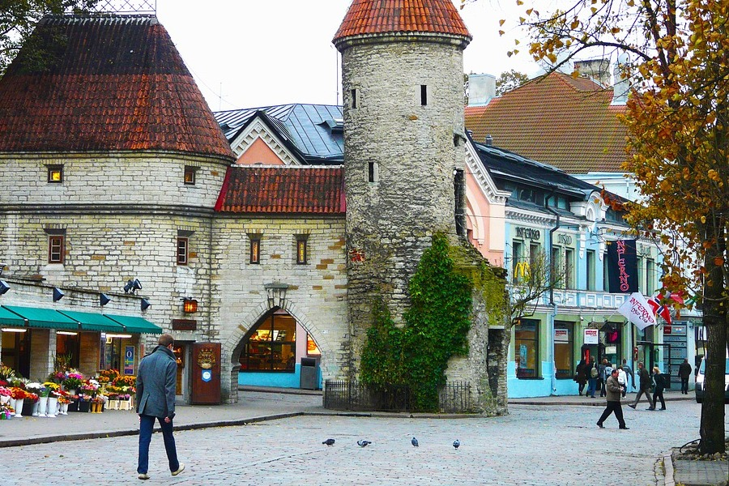
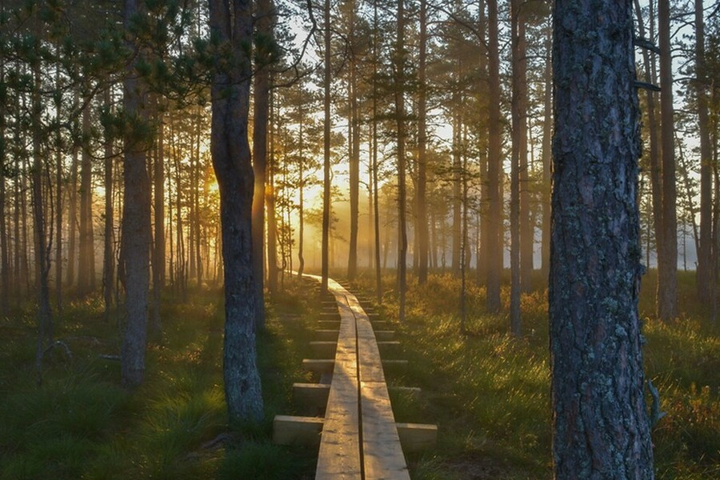
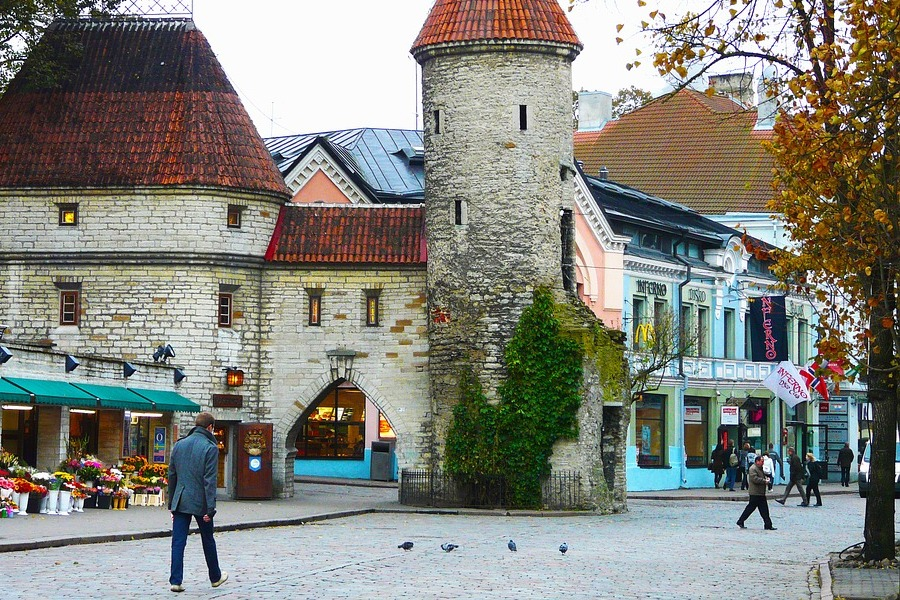
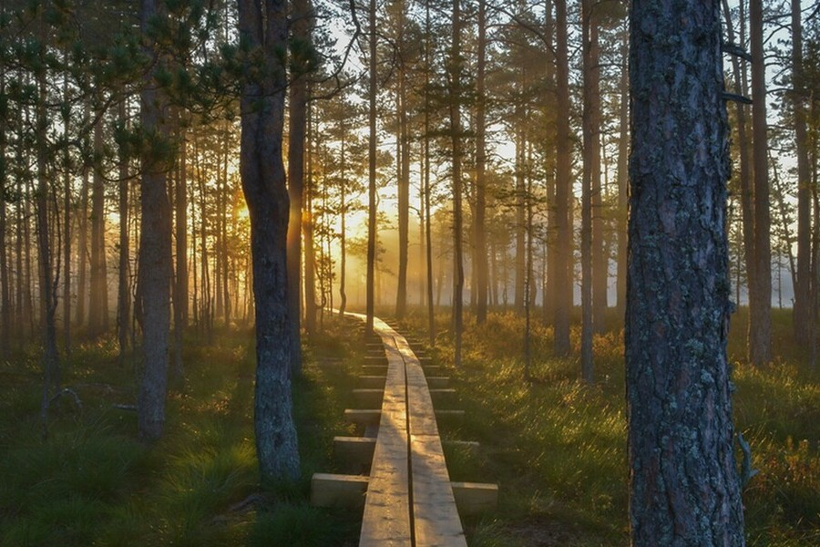
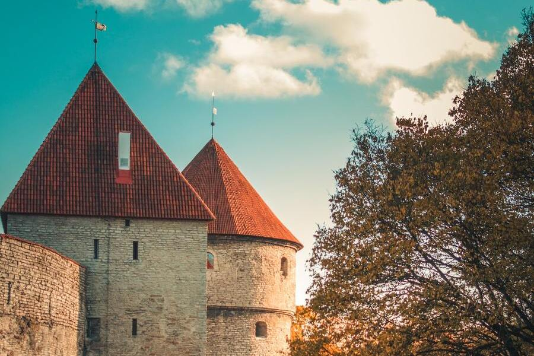
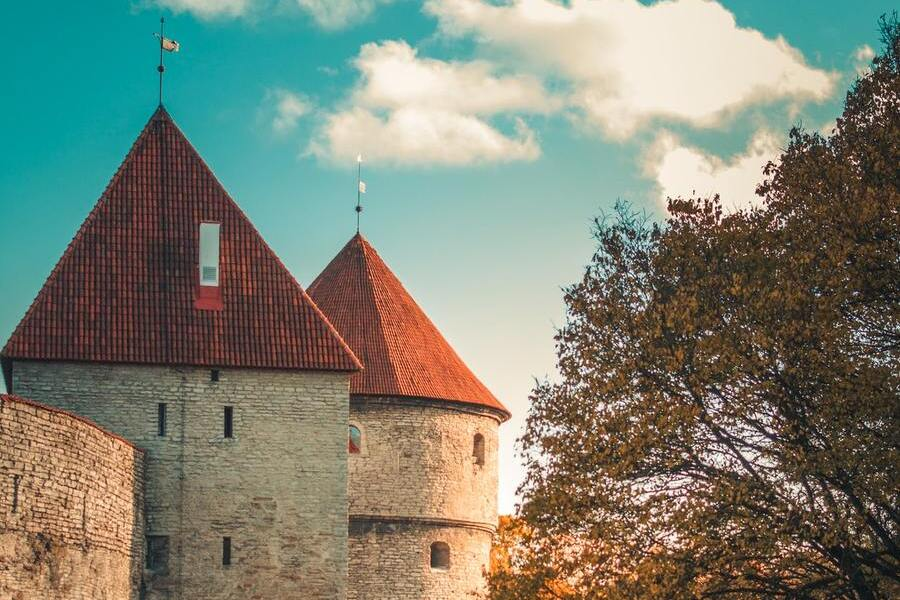

Фотографии Эстонии
Куда приводят мечты о романтическом средневековье, очищенном от грубой исторической правды вдохновенным пером Вальтера Скотта? Разумеется, в Эстонию! Доисторические ландшафты, убаюканные рокотом волн, видят красочные сны о славной эпохе, оставившей на память ожерелье неприступных замков и величественных церквей. За бастионными стенами время замедляет бег, сохраняя для потомков красивые обычаи, старинные ремёсла и руны, пробуждающие к жизни былинных богатырей. Добро пожаловать в заповедник сказок и легенд!

 



 
